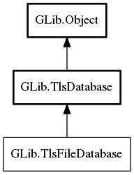

TlsFileDatabase
Object Hierarchy:
Description:
TlsFileDatabase is implemented by TlsDatabase objects which load their certificate information from a file.
It is an interface which TLS library specific subtypes implement.
Namespace: GLib
Package: gio-2.0
Content:
Properties:
Static methods:
Inherited Members:
All known members inherited from class GLib.TlsDatabase

All known members inherited from class GLib.Object